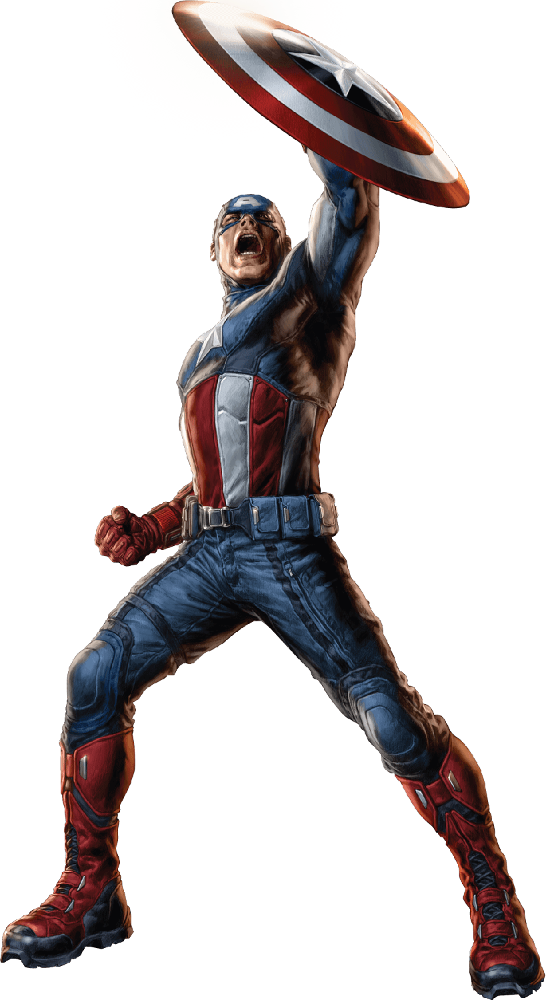

Steven « Steve » Rogers naît le 4 juillet 1917, dans le quartier du Lower East Side à New York, de parents immigrés irlandais pauvres, Joseph et Sarah Rogers, et grandit pendant la Grande Dépression.

Le père de Rogers, un alcoolique chronique, meurt quand celui-ci est enfant. Steve passe une jeunesse fragile et artistique, avec un amour pour l'imagination (il a un don pour le dessin). Il est souvent protégé contre les autres enfants qui l'oppressent par son ami Arnold « Arnie » Roth. Diplômé durant sa dernière année de lycée, Steve perd sa mère, atteinte d'une pneumonie. Au début de 1940, avant l'entrée dans la Seconde Guerre mondiale de l'Amérique, Rogers est un étudiant aux beaux-arts, de grande taille mais malingre, spécialisé dans l'illustration, ainsi qu'un auteur et un dessinateur de bande dessinée.
Alors que la Seconde Guerre mondiale fait rage en Europe, le jeune Steve Rogers n'aspire qu'à une seule chose : combattre le nazisme en s'enrôlant dans l'armée. Le jugeant trop maigre pour faire un soldat, les médecins militaires de l'US Army le réforment. Pourtant, la détermination de Rogers est telle qu'un officier, le général Chester Phillips le remarque et lui propose de participer à une expérience secrète dans un laboratoire à Washington, le « Projet Renaissance ». Rogers est alors utilisé comme un sujet de test pour le projet « Super-Soldat », recevant un sérum spécial, le « Sérum du Super Soldat », conçu par le Dr Reinstein (celui-ci ayant pris lors du projet le nom de code d'Abraham Erskine). Ce sérum, combiné à une irradiation (le « Vita-rayon », pour stabiliser l’effet du sérum), pourrait transformer un être chétif en super-soldat. Steve Rogers, prêt à tout, accepte de tenter cette expérience hasardeuse.
L’expérience est un succès et transforme Steve Rogers en un être humain presque parfait, avec une force, une agilité, une endurance et une intelligence à l'apogée du potentiel humain. Par la suite, il subit un programme d’entraînement militaire et physique intensif.
Steve Rogers est alors enrôlé dans l'armée en tant que simple soldat pour mieux suivre les combats et y participer en tant que Captain America, qui devient rapidement un symbole pour ses camarades.